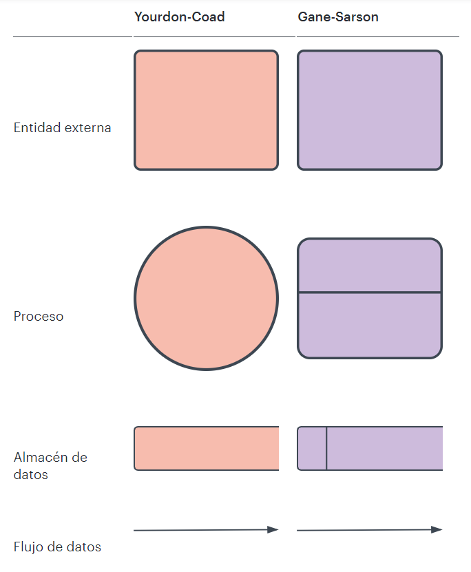

Notaciones de diagramas de flujo de datos

Los dos tipos principales de notación que emplean los diagramas de flujo de datos son Yourdon-Coad y Gane-Sarson, ambos llevan los nombres de sus creadores, todos expertos que ayudaron a desarrollar la metodología de DFD: Ed Yourdon, Peter Coad, Chris Gane y Trish Sarson. Hay algunas diferencias en cuanto al estilo entre los tipos de notación.
Por ejemplo, la notación de Yourdon y Coad usa círculos para representar procesos, mientras que la notación de Gane y Sarson usa rectángulos con esquinas redondeadas. Otra variación es el símbolo usado para los almacenes de datos; Yourdon y Coad usa líneas paralelas, en cambio, la notación de Gane y Sarson usa un rectángulo abierto. Como los símbolos de los DFD pueden variar, es importante ser consistente con la notación que elijas para evitar confusiones.
Si estás usando un software de creación de DFD, es probable que predetermine el conjunto de símbolos disponible para usar. Todos los diagramas de flujo de datos incluyen cuatro elementos principales: entidad, proceso, almacén de datos y flujo de datos.